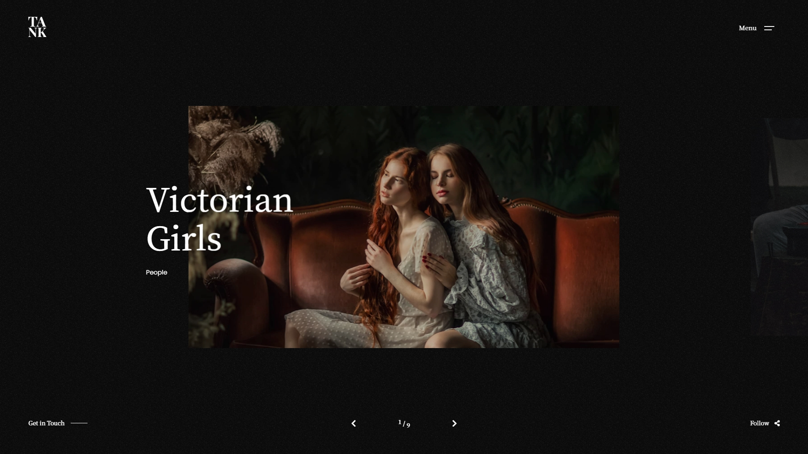
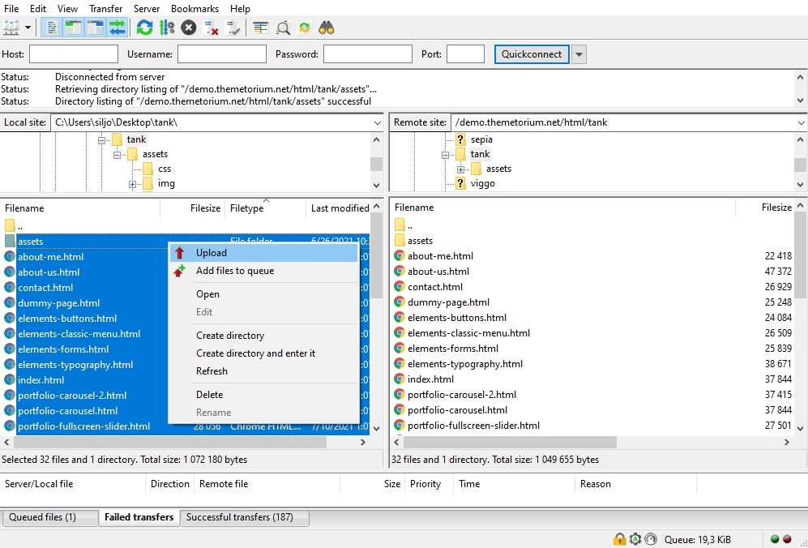

Thank you for purchasing this template. :)

This template requires that you are familiar with at least HTML and CSS. If you are not familiar with HTML and CSS, I highly recommend that you hire a specialist. It will save your time and you will get only positive emotions while using this product.
Tank - is a simple HTML template. HTML is static, this means no dynamic features (no PHP and MySQL). This template is just a good starting point if you want to create your own web site contains mainly the design elements you can use.
* Some parts may not work properly on your local computer. Upload template to your web server to function properly!
All template files are located in folder named "UPLOAD".
+-- tank / +-- assets / ¦ +-- css / ¦ ¦ +-- helper.css (helper CSS classes) ¦ ¦ +-- theme.css (template master CSS) ¦ +-- img / ¦ ¦ +-- ...all images used ¦ +-- js / ¦ ¦ +-- theme.js (template JS) ¦ +-- vendor / ¦ ¦ +-- ...all external scripts/plugins ¦ +-- vids / ¦ ¦ +-- ...all video files used ¦ +-- favicon.ico +-- mail.php +-- index.html +-- about-me.html +-- about-us.html +-- ...all .html files
Simply upload all template files (can be found in "UPLOAD" folder) to your server using your favorite FTP client (I recommend FileZilla). Once uploaded, point your browser to your site URL and you are done. No any hocus-pocus. :)
This template uses its own grid system with similar logic to the Bootstrap grid system.
<div class="tt-section"> <div class="tt-section-inner tt-wrap"> <div class="tt-row"> <div class="tt-col-md-8">.tt-col-md-8</div> <div class="tt-col-md-4">.tt-col-md-4</div> </div> <div class="tt-row"> <div class="tt-col-md-4">.tt-col-md-4</div> <div class="tt-col-md-4">.tt-col-md-4</div> <div class="tt-col-md-4">.tt-col-md-4</div> </div> <div class="tt-row"> <div class="tt-col-md-6">.tt-col-md-6</div> <div class="tt-col-md-6">.tt-col-md-6</div> </div> </div> <!-- /.tt-section-inner --> </div> <!-- End tt-section -->
<!DOCTYPE html>
<!--
Template: Tank - Creative Portfolio Showcase HTML Website Template
Author: Themetorium
URL: https://themetorium.net/
-->
<html lang="en">
<head>
<!-- Title -->
<title>Your page title goes here...</title>
<!-- Meta -->
<meta charset="utf-8">
<meta name="description" content="Your page description goes here...">
<meta name="author" content="themetorium.net">
<!-- Mobile Meta -->
<meta name="viewport" content="width=device-width, initial-scale=1, shrink-to-fit=no">
<!-- Favicon (http://www.favicon-generator.org/) -->
<link rel="shortcut icon" href="favicon.ico" type="image/x-icon">
<link rel="icon" href="favicon.ico" type="image/x-icon">
<!-- Google Analytics - Global site tag (gtag.js) -->
<!-- Paste your Google Anaytics code here. -->
<!-- Google fonts (https://www.google.com/fonts) -->
<link rel="preconnect" href="https://fonts.gstatic.com">
<link href="https://fonts.googleapis.com/css2?family=Poppins:wght@300;400;500;600;700;800;900&display=swap" rel="stylesheet"> <!-- Body font -->
<link href="https://fonts.googleapis.com/css2?family=Noto+Serif+JP:wght@200;300;400;500;600;700;900&display=swap" rel="stylesheet"> <!-- Secondary/Alter font -->
<!-- Libs and Plugins CSS (all template scripts libs and plugins CSS goes here) -->
<link rel="stylesheet" href="assets/vendor/normalize/normalize.min.css"> <!-- Normalize CSS (https://necolas.github.io/normalize.css/) -->
<link rel="stylesheet" href="assets/vendor/fontawesome/css/fontawesome-all.min.css"> <!-- Font Icons CSS (https://fontawesome.com) Free version! -->
<link rel="stylesheet" href="assets/vendor/swiper/css/swiper-bundle.min.css"> <!-- Swiper CSS (https://swiperjs.com/) -->
<link rel="stylesheet" href="assets/vendor/lightgallery/css/lightgallery.min.css"> <!-- lightGallery CSS (http://sachinchoolur.github.io/lightGallery) -->
<!-- Template master CSS -->
<link rel="stylesheet" href="assets/css/helper.css">
<link rel="stylesheet" href="assets/css/theme.css">
</head>
<!-- ===========
///// Body /////
================
* Use class "tt-boxed" to enable page boxed layout globally (affects all elements containing class "tt-wrap").
* Use class "tt-smooth-scroll" to enable page smooth scrolling.
* Use class "tt-transition" to enable page transitions.
* Use class "tt-magic-cursor" to enable magic cursor.
-->
<body id="body" class="tt-transition tt-boxed tt-smooth-scroll tt-magic-cursor">
<!-- *************************************
*********** Begin body inner *************
************************************** -->
<main id="body-inner">
<!-- Begin page transition (do not remove!!!)
=========================== -->
<div id="page-transition">
<div class="ptr-overlay"></div>
<div class="ptr-preloader">
<div class="ptr-prel-content">
<!-- Hint: You may need to change the img height and opacity to match your logo type. You can do this from the "theme.css" file (find: ".ptr-prel-image"). -->
<img src="assets/img/logo-light.png" class="ptr-prel-image tt-logo-light" alt="Logo">
</div> <!-- /.ptr-prel-content -->
</div> <!-- /.ptr-preloader -->
</div>
<!-- End page transition -->
<!-- Begin magic cursor
======================== -->
<div id="magic-cursor">
<div id="ball"></div>
</div>
<!-- End magic cursor -->
<!-- Begin noise background -->
<div class="bg-noise"></div>
<!-- End noise background -->
<!-- *****************************************
*********** Begin scroll container ***********
****************************************** -->
<div id="scroll-container">
<!-- ===================
///// Begin header /////
========================
* Use class "tt-header-fixed" to set header to fixed position.
-->
<header id="tt-header" class="tt-header-fixed">
<div class="tt-header-inner"> <!-- add/remove class "tt-wrap" to enable/disable element boxed layout (class "tt-boxed" is required in <body> tag!). Note: additionally you can use prepared helper class "max-width-*" to add custom width to "tt-wrap". Example: "max-width-1500" (class "tt-wrap" is still required!). More info about helper classes can be found in the file "helper.css". -->
<div class="tt-header-col">
<!-- Begin logo
================ -->
<div class="tt-logo">
<a href="index.html">
<!-- Hint: You may need to change the img height to match your logo type. You can do this from the "theme.css" file (find: ".tt-logo img"). -->
<img src="assets/img/logo-light.png" class="tt-logo-light magnetic-item" alt="Logo"> <!-- logo light -->
<img src="assets/img/logo-dark.png" class="tt-logo-dark magnetic-item" alt="Logo"> <!-- logo dark -->
</a>
</div>
<!-- End logo -->
</div> <!-- /.tt-header-col -->
<div class="tt-header-col">
<!-- Begin overlay menu toggle button -->
<div id="tt-ol-menu-toggle-btn-wrap">
<div class="tt-ol-menu-toggle-btn-text">
<span class="text-menu" data-hover="Open">Menu</span>
<span class="text-close">Close</span>
</div>
<div class="tt-ol-menu-toggle-btn-holder">
<a href="#" class="tt-ol-menu-toggle-btn magnetic-item"><span></span></a>
</div>
</div>
<!-- End overlay menu toggle button -->
<!-- Begin overlay menu
========================
* Use class "tt-ol-menu-center" to align menu to center.
* Use class "tt-ol-menu-count" to enable menu counter.
-->
<nav class="tt-overlay-menu tt-ol-menu-center tt-ol-menu-count">
<div class="tt-ol-menu-holder">
<div class="tt-ol-menu-inner tt-wrap">
<div class="tt-ol-menu-content">
<!-- Begin menu list -->
<ul class="tt-ol-menu-list">
<li><a href="your-page.html">Link</a></li>
<!-- Begin submenu (submenu master)
==================================== -->
<li class="tt-ol-submenu-wrap">
<div class="tt-ol-submenu-trigger">
<a href="#">Submenu</a>
<div class="tt-ol-submenu-caret-wrap">
<div class="tt-ol-submenu-caret magnetic-item"></div>
</div> <!-- /.tt-ol-submenu-caret-wrap -->
</div> <!-- /.tt-ol-submenu-trigger -->
<div class="tt-ol-submenu">
<ul class="tt-ol-submenu-list">
<!-- Begin submenu
=================== -->
<li class="tt-ol-submenu-wrap">
<div class="tt-ol-submenu-trigger">
<a href="#" class="tt-ol-submenu-link">Submenu</a>
<div class="tt-ol-submenu-caret-wrap">
<div class="tt-ol-submenu-caret magnetic-item"></div>
</div> <!-- /.tt-ol-submenu-caret-wrap -->
</div> <!-- /.tt-ol-submenu-trigger -->
<div class="tt-ol-submenu">
<ul class="tt-ol-submenu-list">
<li><a href="your-page.html">Link 1</a></li>
<li><a href="your-page.html">Link 2</a></li>
<li><a href="your-page.html">Link 3</a></li>
</ul> <!-- /.tt-ol-submenu-list -->
</div> <!-- /.tt-ol-submenu -->
</li>
<!-- End submenu -->
<li><a href="your-page.html">Link</a></li>
<li><a href="your-page.html">Link</a></li>
</ul> <!-- /.tt-ol-submenu-list -->
</div> <!-- /.tt-ol-submenu -->
</li>
<!-- End submenu (sub-master) -->
<li><a href="your-page.html">Link</a></li>
<li><a href="your-page.html">Link</a></li>
</ul>
<!-- End menu list -->
</div> <!-- /.tt-main-menu-content -->
</div> <!-- /.tt-ol-menu-inner -->
</div> <!-- /.tt-ol-menu-holder -->
<!-- Begin noise background -->
<div class="bg-noise"></div>
<!-- End noise background -->
</nav>
<!-- End overlay menu -->
</div> <!-- /.header-col -->
</div> <!-- /.header-inner -->
</header>
<!-- End header -->
<!-- *************************************
*********** Begin content wrap ***********
************************************** -->
<div id="content-wrap">
<!-- ========================
///// Begin page header /////
=============================
* Use class "ph-full" to enable fullscreen size.
* Use class "ph-cap-sm", "ph-cap-lg", "ph-cap-xlg" or "ph-cap-xxlg" to set caption size (no class = default size).
* Use class "ph-center" to enable content center position.
* Use class "ph-bg-image" to enable page header background image (required for a portfolio single project!).
* Use class "ph-bg-image-is-light" if needed, it makes the elements dark and more visible if you use a very light image (effect only with class "ph-bg-image").
* Use class "ph-image-shadow" to enable page header background image (effect only with class "ph-bg-image").
* Use class "ph-image-cropped" to crop image. It fixes image dimensions (no effect for "ph-bg-image"!).
* Use class "ph-image-cover-*" to set image overlay opacity. For example "ph-image-cover-2" or "ph-image-cover-2-5" (up to "ph-image-cover-9-5").
* Use class "ph-content-parallax" to enable content parallax.
* Use class "ph-stroke" to enable caption title stroke style.
-->
<div id="page-header" class="ph-full ph-cap-xxlg ph-center ph-image-cropped ph-content-parallax">
<div class="page-header-inner tt-wrap">
<!-- Begin page header image
============================= -->
<div class="ph-image">
<div class="ph-image-inner">
<img src="assets/img/misc/misc-2.jpg" alt="Image">
</div>
</div>
<!-- End page header image -->
<!-- Begin page header caption
=============================== -->
<div class="ph-caption">
<h1 class="ph-caption-title ph-appear">Title</h1>
<div class="ph-caption-title-ghost ph-appear">Title</div>
<div class="ph-caption-subtitle ph-appear">Subtitle</div>
</div>
<!-- End page header caption -->
</div> <!-- /.page-header-inner -->
<!-- Begin scroll down circle (you can change "data-offset" to set scroll top offset)
============================== -->
<a href="#page-content" class="scroll-down-circle" data-offset="30">
<div class="sdc-inner ph-appear">
<div class="sdc-icon"><i class="fas fa-chevron-down"></i></div>
<svg viewBox="0 0 500 500">
<defs>
<path d="M50,250c0-110.5,89.5-200,200-200s200,89.5,200,200s-89.5,200-200,200S50,360.5,50,250" id="textcircle"></path>
</defs>
<text dy="30">
<textPath xlink:href="#textcircle">Scroll down - Scroll down -</textPath>
</text>
</svg>
</div> <!-- /.sdc-inner -->
</a>
<!-- End scroll down circle -->
<!-- Begin made with love
========================== -->
<div class="made-with-love ph-appear">
<div class="mwl-inner">
<div class="mwl-text">Made with</div>
<div class="mwl-icon"><i class="far fa-heart"></i></div>
</div>
</div>
<!-- End made with love -->
</div>
<!-- End page header -->
<!-- *************************************
*********** Begin page content ***********
************************************** -->
<div id="page-content">
<!-- =======================
///// Begin tt-section /////
============================
* You can use padding classes if needed. For example "padding-top-xlg-150", "padding-bottom-xlg-150", "no-padding-top", "no-padding-bottom", etc. Note that each situation may be different and each section may need different classes according to your needs. More info about helper classes can be found in the file "helper.css".
-->
<div class="tt-section">
<div class="tt-section-inner tt-wrap">
All section content code goes here...
</div> <!-- /.tt-section-inner -->
</div>
<!-- End tt-section -->
<!-- =======================
///// Begin tt-section /////
============================
* You can use padding classes if needed. For example "padding-top-xlg-150", "padding-bottom-xlg-150", "no-padding-top", "no-padding-bottom", etc. Note that each situation may be different and each section may need different classes according to your needs. More info about helper classes can be found in the file "helper.css".
-->
<div class="tt-section">
<div class="tt-section-inner tt-wrap">
All section content code goes here...
</div> <!-- /.tt-section-inner -->
</div>
<!-- End tt-section -->
<!-- =======================
///// Begin tt-section /////
============================
* You can use padding classes if needed. For example "padding-top-xlg-150", "padding-bottom-xlg-150", "no-padding-top", "no-padding-bottom", etc. Note that each situation may be different and each section may need different classes according to your needs. More info about helper classes can be found in the file "helper.css".
-->
<div class="tt-section">
<div class="tt-section-inner tt-wrap">
All section content code goes here...
</div> <!-- /.tt-section-inner -->
</div>
<!-- End tt-section -->
</div>
<!-- End page content -->
<!-- ======================
///// Begin tt-footer /////
=========================== -->
<footer id="tt-footer">
<div class="tt-footer-inner">
<!-- Begin footer column
========================= -->
<div class="footer-col tt-align-center-left">
<div class="footer-col-inner">
<!-- You can use whatever button or link here -->
<div class="tt-btn tt-btn-link">
<a href="#" class="scroll-to-top" data-hover="Back to top">Back to top</a>
</div>
</div> <!-- /.footer-col-inner -->
</div>
<!-- Begin footer column -->
<!-- Begin footer column
========================= -->
<div class="footer-col tt-align-center order-m-last">
<div class="footer-col-inner">
<div class="tt-copyright">
© Copyright - <a href="https://your-link-address.com" target="_blank" rel="noopener" class="tt-link">Your copyright goes here...</a>
</div>
</div> <!-- /.footer-col-inner -->
</div>
<!-- Begin footer column -->
<!-- Begin footer column
========================= -->
<div class="footer-col tt-align-center-right">
<div class="footer-col-inner">
<div class="footer-social">
<div class="footer-social-text"><span>Follow</span><i class="fas fa-share-alt"></i></div>
<div class="social-buttons">
<ul>
<li><a href="https://your-link-address.com" class="magnetic-item" target="_blank" rel="noopener">Fb.</a></li>
<li><a href="https://your-link-address.com" class="magnetic-item" target="_blank" rel="noopener">Tw.</a></li>
<li><a href="https://your-link-address.com" class="magnetic-item" target="_blank" rel="noopener">Yt.</a></li>
<li><a href="https://your-link-address.com" class="magnetic-item" target="_blank" rel="noopener">Dr.</a></li>
<li><a href="https://your-link-address.com" class="magnetic-item" target="_blank" rel="noopener">Be.</a></li>
</ul>
</div> <!-- /.social-buttons -->
</div> <!-- /.footer-social -->
</div> <!-- /.footer-col-inner -->
</div>
<!-- Begin footer column -->
</div> <!-- /.tt-section-inner -->
</footer>
<!-- End tt-footer -->
</div>
<!-- End content wrap -->
</div>
<!-- End scroll container -->
</main>
<!-- End body inner -->
<!-- ====================
///// Scripts below /////
===================== -->
<!-- Core JS -->
<script src="assets/vendor/jquery/jquery.min.js"></script> <!-- jquery JS (https://jquery.com) -->
<!-- Libs and Plugins JS (all template libs and plugins JS goes here) -->
<script src="assets/vendor/gsap/gsap.min.js"></script> <!-- GSAP JS (https://greensock.com/gsap/) -->
<script src="assets/vendor/gsap/ScrollToPlugin.min.js"></script> <!-- GSAP ScrollToPlugin JS (https://greensock.com/scrolltoplugin/) -->
<script src="assets/vendor/gsap/ScrollTrigger.min.js"></script> <!-- GSAP ScrollTrigger JS (https://greensock.com/scrolltrigger/) -->
<script src="assets/vendor/smooth-scrollbar.js"></script> <!-- Smooth Scrollbar JS (https://github.com/idiotWu/smooth-scrollbar/) -->
<script src="assets/vendor/swiper/js/swiper-bundle.min.js"></script> <!-- Swiper JS (https://swiperjs.com/) -->
<script src="assets/vendor/imagesloaded.pkgd.min.js"></script> <!-- imagesloaded JS (more info: https://imagesloaded.desandro.com/) -->
<script src="assets/vendor/isotope.pkgd.min.js"></script> <!-- Isotope JS (http://isotope.metafizzy.co) -->
<script src="assets/vendor/packery-mode.pkgd.min.js"></script> <!-- Isotope Packery Mode JS (https://isotope.metafizzy.co/layout-modes/packery.html) -->
<script src="assets/vendor/lightgallery/js/lightgallery-all.min.js"></script> <!-- lightGallery Plugins JS (http://sachinchoolur.github.io/lightGallery) -->
<script src="assets/vendor/jquery.mousewheel.min.js"></script> <!-- A jQuery plugin that adds cross browser mouse wheel support (https://github.com/jquery/jquery-mousewheel) -->
<!-- Theme master JS -->
<script src="assets/js/theme.js"></script>
</body>
</html>
jQuery - is a fast, small, and feature-rich JavaScript library. It makes things like HTML document traversal and manipulation, event handling, animation, and Ajax much simpler with an easy-to-use API that works across a multitude of browsers. With a combination of versatility and extensibility, jQuery has changed the way that millions of people write JavaScript. For more information: http://www.jquery.com
Note: The initialization of the elements, libs and features is made by the file named "theme.js" which is located in the folder named "js".
This template contains some extra prepared helper classes you can use. All helper classes are located in the file "helper.css". You are free to use these classes to customize your website.
All sliders and carousels based on Swiper.js. More information can be found here: https://swiperjs.com
All animations based on GSAP. More information can be found here: https://greensock.com/gsap/
This template includes a working contact form. Proceed as follows in order to configure it.
Open file "contact.html" or whatever file containing the contact form. Find and configure the following code:
<!-- Begin hidden required fields (https://github.com/agragregra/uniMail) --> <input type="hidden" name="project_name" value="yourwebsiteaddress.com"> <!-- Change value to your site name --> <input type="hidden" name="admin_email" value="your@email.com"> <!-- Change value to your valid email address (where a message will be sent) --> <input type="hidden" name="form_subject" value="Message from yourwebsiteaddress.com"> <!-- Change value to your own message subject --> <!-- End Hidden Required Fields -->
More information about uniMail: https://github.com/agragregra/uniMail
This template comes with a shop included. If you don't need shop on your website then you can remove it easily. Proceed as follows:
1) Remove all shop related .html pages (shop-***.html)
2) Remove file assets/css/shop.css
3) Remove file assets/js/shop.js
By default, all shop elements work only on shop-related pages (shop-***.html). If you want to add shop elements to another page (other than shop pages), first you need to link shop .css and .js files to that page. Proceed as follows:
1) In the page <head> section find:
<link rel="stylesheet" href="assets/css/theme.css">
2) Above it add:
<link rel="stylesheet" href="assets/css/shop.css">
3) At the bottom of the page find:
<script src="assets/js/theme.js"></script>
4) Above it add:
<script src="assets/js/shop.js"></script>
Font Awesome - gives you scalable vector icons that can instantly be customized size, color, drop shadow, and anything that can be done with the power of CSS.
<i class="fas fa-search"></i> <i class="far fa-user"></i> <i class="fal fa-folder-open"></i> ...
More information about Font Awesome: https://fontawesome.com/
Google Fonts:
Please take a look in the <head> part of the website and you will find these tags:
<!-- Google fonts (https://www.google.com/fonts) --> <link rel="preconnect" href="https://fonts.gstatic.com"> <link href="https://fonts.googleapis.com/css2?family=Poppins:wght@300;400;500;600;700;800;900&display=swap" rel="stylesheet"> <!-- Body font --> <link href="https://fonts.googleapis.com/css2?family=Noto+Serif+JP:wght@200;300;400;500;600;700;900&display=swap" rel="stylesheet"> <!-- Secondary/Alter font -->
To change the font, first go to http://www.google.com/webfonts choose a font/fonts and use the generated code.
The best way to update the template is to use some file comparison software to compare the differences between the old and new template versions
(I recommend “WinMerge”: ). Then make the necessary changes. I know this may be time-consuming, but unfortunately, there is no easier solution.
The good practice is that you do not edit directly to the template core CSS files. Instead, create a new CSS file (for example "custom.css") and place it in the folder assets/css/, then make your changes there.
Do not forget to add: <link rel="stylesheet" type='text/css' href="assets/css/custom.css"> to <head> part of your HTML file. Make sure it is located below "Template master CSS" section, otherwise it will not work.
<head> part of your HTML file find:
<!-- Theme master CSS --> <link rel="stylesheet" type='text/css' href="assets/css/helper.css"> <link rel="stylesheet" type='text/css' href="assets/css/theme.css">Below it add:
<!-- Theme custom CSS --> <link rel="stylesheet" type='text/css' href="assets/css/custom.css">
Now file custom.css overwrites the master CSS files, and next time if you update the template, then your CSS changes will not be lost.
If you need help with this template, please send me an email by using the contact form you can find here.